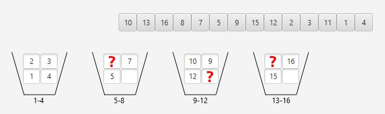

Zadanie 4
Pytanie: Jakie wartości zaznaczone jako czerwony znak zapytania są brakujące w kubełkach?

Odpowiedzi:
A) 11 - kubełek 4, 13 - kubełek 3, 8 - kubełek 2.
B) 13 - kubełek 4, 11 - kubełek 3, 6 - kubełek 2.
C) 11 - kubełek 3, 6 - kubełek 2, 13 - kubełek 4.
D) 13 - kubełek 4, 8 - kubełek 2, 11 - kubełek 3.